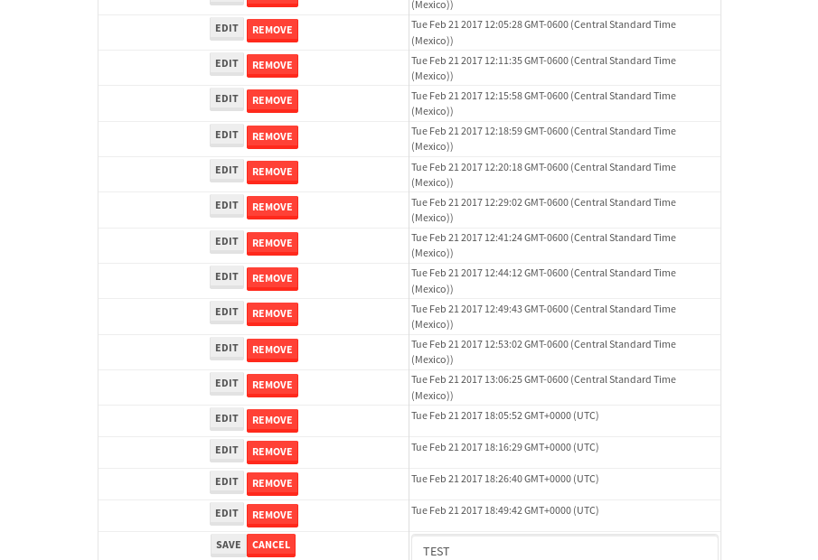

tbColumn.Grid Sorting - 27.777sTests: 5Skipped: 0Failures: 0 should sort data in ascending order then on descending order when sorting by Order Id column - 5.36sTests passed: 100.00%should order data in ascending order when click-sorting an unsorted text column - 6.26sTests passed: 100.00%should order data in descending order when click-sorting an ascending-sorted text column - 5.216sTests passed: 100.00%should order data in ascending order when click-sorting an unsorted date column - 4.933sTests passed: 100.00%should order data in descending order when click-sorting twice an unsorted date column - 6.006sTests passed: 100.00%
tbEmptyForm - 3.359sTests: 3Skipped: 0Failures: 1 should have an empty required field - 0.73sTests passed: 100.00%should not be able to click on save - 0.487sExpected null not to be null null.✗Tests passed: 50.00%should load default value for numeric field - 0.475sTests passed: 100.00%
Tubular Filters.tbColumnFilter - 114.085sTests: 12Skipped: 0Failures: 0 should cancel filtering when clicking outside filter-popover - 9.666sTests passed: 100.00%should disable Value text-input for "None" filter - 6.667sTests passed: 100.00%should disable apply button for "None" filter - 7.32sTests passed: 100.00%should decorate popover button when showing data is being filtered for its column - 13.846sTests passed: 100.00%should correctly filter data for the "Equals" filtering option - 9.635sTests passed: 100.00%should correctly filter data for the "Not Equals" filtering option - 9.469sTests passed: 100.00%should correctly filter data for the "Contains" filtering option - 9.029sTests passed: 100.00%should correctly filter data for the "Not Contains" filtering option - 9.148sTests passed: 100.00%should correctly filter data for the "Starts With" filtering option - 7.007sTests passed: 100.00%should correctly filter data for the "Not Starts With" filtering option - 6.799sTests passed: 100.00%should correctly filter data for the "Ends With" filtering option - 7.137sTests passed: 100.00%should correctly filter data for the "Not Ends With" filtering option - 7.219sTests passed: 100.00%
Tubular Filters.tbColumnDateTimeFilter - 138.029sTests: 12Skipped: 0Failures: 0 should cancel filtering when clicking outside filter-popover - 7.899sTests passed: 100.00%should disable Value text-input for "None" filter - 6.789sTests passed: 100.00%should disable apply button for "None" filter - 6.939sTests passed: 100.00%should clear filtering when clicking on Clean button - 18.119sTests passed: 100.00%should decorate popover button when showing data is being filtered for its column - 11.911sTests passed: 100.00%should correctly filter data for the "Equals" filtering option - 6.928sTests passed: 100.00%should correctly filter data for the "Not Equals" filtering option - 7.838sTests passed: 100.00%should correctly filter data for the "Between" filtering option - 12.29sTests passed: 100.00%should correctly filter data for the "Greater-or-equal" filtering option - 12.192sTests passed: 100.00%should corretlly filter data for the "Greater" filtering option - 12.522sTests passed: 100.00%should correctly filter data for the "Less-or-equal" filtering option - 12.117sTests passed: 100.00%should correctly filter data for the "Less" filtering option - 11.701sTests passed: 100.00%
Tubular Filters.tbColumnOptionsFilter - 81.012sTests: 3Skipped: 0Failures: 0 should cancel filtering when clicking outside filter-popover - 8.691sTests passed: 100.00%should decorate popover button when showing data is being filtered for its column - 11.62sTests passed: 100.00%should filter column-elements in accordance to the selected filter when selecting a single option - 49.873sTests passed: 100.00%
Tubular Filters.tbTextSearch - 49.183sTests: 5Skipped: 0Failures: 0 min-chars is not set - 1.032sTests passed: 100.00%should filter data in searchable-column customer name to matching inputted text, starting from 3 characters - 7.113sTests passed: 100.00%should filter data in searchable-column shipper city to matching inputted text, starting from 3 characters - 12.468sTests passed: 100.00%should show clear button when there is inputted text only - 6.905sTests passed: 100.00%should clear filtering when clicking clear button - 16.238sTests passed: 100.00%
tbForm related components.tbCheckboxField - 6.493sTests: 2Skipped: 0Failures: 0 should save changes on "SAVE" - 3.129sTests passed: 100.00%should discard changes on "CANCEL" - 2.096sTests passed: 100.00%
tbForm related components.tbDropDownEditor - 11.779sTests: 5Skipped: 0Failures: 0 should set initial input value to the value of "value" attribute when defined - 1.787sTests passed: 100.00%should show the component name value in a label field when "showLabel" attribute is true - 1.847sTests passed: 100.00%should show a help field equal to this attribute, is present - 1.598sTests passed: 100.00%should submit modifications to item/server when clicking form "Save" - 3.027sTests passed: 100.00%should NOT submit modifications to item/server when clicking form "Cancel" - 3.034sTests passed: 100.00%
tbForm related components.tbTextArea - 16.761sTests: 7Skipped: 0Failures: 0 should set initial input value to the value of "value" attribute when defined - 2.101sTests passed: 100.00%should be invalidated when the number of chars is not in the range of "min" and "max" attributes - 2.27sTests passed: 100.00%should show the component name value in a label field when "showLabel" attribute is true - 1.638sTests passed: 100.00%should show a help field equal to this attribute, is present - 1.717sTests passed: 100.00%should require the field when the attribute "required" is true - 1.746sTests passed: 100.00%should submit modifications to item/server when clicking form "Save" - 3.854sTests passed: 100.00%should NOT submit modifications to item/server when clicking form "Cancel" - 2.59sTests passed: 100.00%
tbForm related components.tbDateEditor - 14.744sTests: 6Skipped: 0Failures: 0 should set initial date value to the value of "value" attribute when defined - 1.723sTests passed: 100.00%should be invalidated when the date is not in the range of "min" and "max" attributes - 2.879sTests passed: 100.00%should show the component name value in a label field when "showLabel" attribute is true - 1.662sTests passed: 100.00%should show a help field equal to this attribute, is present - 1.751sTests passed: 100.00%should submit modifications to item/server when clicking form "Save" - 2.329sTests passed: 100.00%should NOT submit modifications to item/server when clicking form "Cancel" - 3.585sTests passed: 100.00%
tbForm related components.tbTypeaheadEditor - 20.3sTests: 7Skipped: 0Failures: 0 should show an options list when there is an API-info/component entered-data - 1.954sTests passed: 100.00%should select the option clicked - 2.16sTests passed: 100.00%should show a "delete" button when an option/match is selected, and delete the option if button is clicked - 2.64sTests passed: 100.00%should show a label value equal to the component name when "showLabel" attribue is true - 1.804sTests passed: 100.00%should require a value when "require" attribute is true - 2.23sTests passed: 100.00%should submit modifications to item/server when clicking form "Save" - 6.61sTests passed: 100.00%should NOT submit modifications to item/server when clicking form "Cancel" - 2.078sTests passed: 100.00%
tbForm related components.tbSimpleEditor - 26.572sTests: 9Skipped: 0Failures: 0 should set initial input value to the value of "value" attribute when defined - 2.365sTests passed: 100.00%should be invalidated when the number of chars is not in the range of "min" and "max" attributes - 3.398sTests passed: 100.00%should show the component name value in a label field when "showLabel" attribute is true - 2.378sTests passed: 100.00%should set input placeholder to the value of "placeholder" attribute - 2.262sTests passed: 100.00%should validate the control using the "regex" attribute, if present - 1.856sTests passed: 100.00%should show a help field equal to this attribute, is present - 1.991sTests passed: 100.00%should require the field when the attribute "required" is true - 4.371sTests passed: 100.00%should submit modifications to item/server when clicking form "Save" - 4.503sTests passed: 100.00%should NOT submit modifications to item/server when clicking form "Cancel" - 2.723sTests passed: 100.00%
tbForm related components.tbNumericEditor - 18.907sTests: 7Skipped: 0Failures: 0 should set initial component value to the value of "value" attribute when defined - 2.083sTests passed: 100.00%should be invalidated when the entered number is not in the range of "min" and "max" attributes - 2.406sTests passed: 100.00%should show the component name value in a label field when "showLabel" attribute is true - 1.783sTests passed: 100.00%should show a help field equal to this attribute, is present - 2.034sTests passed: 100.00%should require the field when the attribute "required" is true - 2.285sTests passed: 100.00%should submit modifications to item/server when clicking form "Save" - 5.191sTests passed: 100.00%should NOT submit modifications to item/server when clicking form "Cancel" - 2.313sTests passed: 100.00%
tbForm Connection Error NoModelKey - 2.497sTests: 1Skipped: 0Failures: 0 tbForm connection error functionality - 0.502sTests passed: 100.00%
tbForm Connection Error NoServerUrl - 2.645sTests: 1Skipped: 0Failures: 0 tbForm connection error functionality - 0.479sTests passed: 100.00%
tbGridComponents - 50.224sTests: 6Skipped: 0Failures: 3 should add item with newRow method - 5.145sTests passed: 100.00%should add item with newRow method and cancel action - 1.079sTests passed: 100.00%should update item with tbSaveButton - 19.565sExpected '' to be 'TEST'.✗Tests passed: 0.00%should NOT update item on cancel Update action - 0.796sFailed: ElementNotVisibleError✗Tests passed: 0.00%should remove item with tbRemoveButton - 20.988sExpected 92 not to be 92, 'should remove the row from the table'.✗Tests passed: 50.00%should NOT remove item on cancel Remove action - 1.217sTests passed: 100.00%
tbGridPager.navigation buttons - 9.254sTests: 1Skipped: 0Failures: 0 should perform no action when clicking on the numbered navigation button corresponding to the current-showing results page - 1.325sTests passed: 100.00%
tbGridPager.navigation buttons.first/non-last results page related functionallity - 4.151sTests: 2Skipped: 0Failures: 0 should disable "first" and "previous" navigation buttons when in first results page - 1.901sTests passed: 100.00%should enable "last" and "next" navigation buttons when in a results page other than last - 2.25sTests passed: 100.00%
tbGridPager.navigation buttons.last/non-first results page related functionallity - 3.778sTests: 2Skipped: 0Failures: 0 should disable "last" and "next" navigation buttons when in last results page - 1.757sTests passed: 100.00%should enable "first" and "previous" navigation buttons when in a results page other than first - 2.021sTests passed: 100.00%
tbGridPager.page navigation - 7.833sTests: 5Skipped: 0Failures: 0 should go to next results page when clicking on next navigation button - 1.719sTests passed: 100.00%should go to previous results page when clicking on previous navigation button - 1.61sTests passed: 100.00%should go to last results page when clicking on last navigation button - 1.557sTests passed: 100.00%should go to first results page when clicking on first navigation button - 1.219sTests passed: 100.00%should go to corresponding results page when clicking on a numbered navigation button - 1.728sTests passed: 100.00%
tbGridPagerInfo - 5.153sTests: 2Skipped: 0Failures: 0 should show text in accordance to numbered of filter rows and current results-page - 1.321sTests passed: 100.00%should show count in footer - 0.629sTests passed: 100.00%
tbHttp - 17.611sTests: 8Skipped: 1Failures: 0 should be authenticated - 2.333sTests passed: 100.00%retrieve data - 2.308sTests passed: 100.00%should not login bad credentials - 2.329sTests passed: 100.00%should have a refresh token - 2.718sTests passed: 100.00%should remove authentication - 2.522sTests passed: 100.00%get method-Is not authenticated - 2.999sTests passed: 100.00%post method-Is not authenticated - 2.402sTests passed: 100.00%should regenerate access token on post - 0s***Skipped***Tests passed: 0%
tbPageSizeSelctor - 10.397sTests: 4Skipped: 0Failures: 0 should filter up to 10 data rows per page when selecting a page size of "10" - 2.673sTests passed: 100.00%should filter up to 20 data rows per page when selecting a page size of "20" - 1.482sTests passed: 100.00%should filter up to 50 data rows per page when selecting a page size of "50" - 2.416sTests passed: 100.00%should filter up to 100 data rows per page when selecting a page size of "100" - 1.968sTests passed: 100.00%
tbRowSelectable - 9.592sTests: 2Skipped: 0Failures: 0 selected rows - 4.245sTests passed: 100.00%unselected rows - 3.344sTests passed: 100.00%
tbSingleForm - 18.243sTests: 8Skipped: 1Failures: 0 should load correct info - 0.001s***Skipped***Tests passed: 0%should change customer name - 2.356sTests passed: 100.00%should save it - 3.04sTests passed: 100.00%should clear the inputs - 3sTests passed: 100.00%should update - 2.538sTests passed: 100.00%should reset editor - 2.545sTests passed: 100.00%should not save if not Changes - 2.45sTests passed: 100.00%should not be able to click on save - 2.313sTests passed: 100.00%


{kind=link}